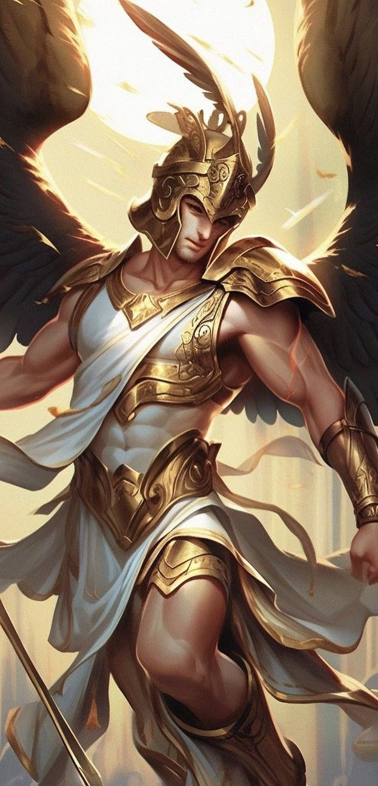
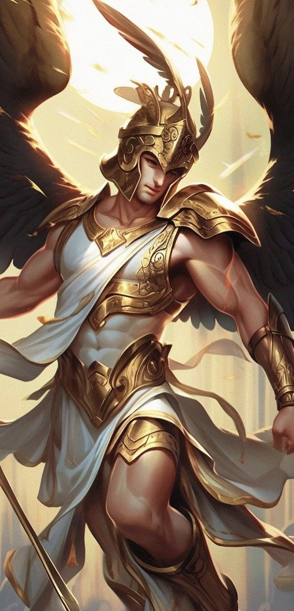

Saiba mais sobre minha lista favorita

.Filmes;
.Séries;
.Musicas;
.Muito+
gostou da minha imagem?
quer saber mais sobre quem sou?
Sobre o HermesNo mesmo dia em que nasceu, Hermes saiu do berço, encontrou o rebanho de Apolo e o escondeu para si, caminhando para trás para não deixar rastros. Depois, voltou como se nada tivesse acontecido. Apolo, furioso, descobriu o roubo e o levou diante de Zeus. Hermes, com seu jeito astuto, negou com charme, mas acabou confessando e devolvendo os bois. Para acalmar Apolo, ofereceu-lhe a lira, instrumento musical que ele mesmo havia inventado com o casco de uma tartaruga. Impressionado, Apolo perdoou Hermes e, desde então, os dois se tornaram aliados. Esse mito mostra a esperteza e a criatividade de Hermes, que viria a se tornar o mensageiro dos deuses.
NÃO PRESSIONE, CENAS FORTES